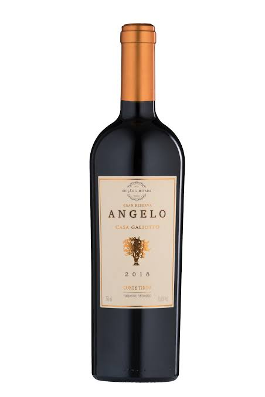

O início da Vinheria Angnello
Tudo começou em 1978, quando Giovanni Angnello, filho de imigrantes italianos, comprou um pequeno terreno nas colinas do Vale do Rio das Pedras.
Ele trouxe consigo mudas de videiras herdadas do avô e o sonho de recriar, em solo brasileiro, os vinhos que sua família produzia há gerações na região da Toscana.
Uma tradição familiar
Os primeiros anos foram difíceis. O clima era diferente, a terra precisava de tempo para se adaptar e muitas colheitas foram perdidas.
Mesmo diante das dificuldades, Giovanni continuou trabalhando até que, em 1985, a Vinícola Angnello lançou seu primeiro rótulo.
Angnello atualmente
Atualmente, a vinícola é conduzida pela terceira geração da família, unindo técnicas modernas de vinificação à tradição artesanal transmitida ao longo das gerações.
